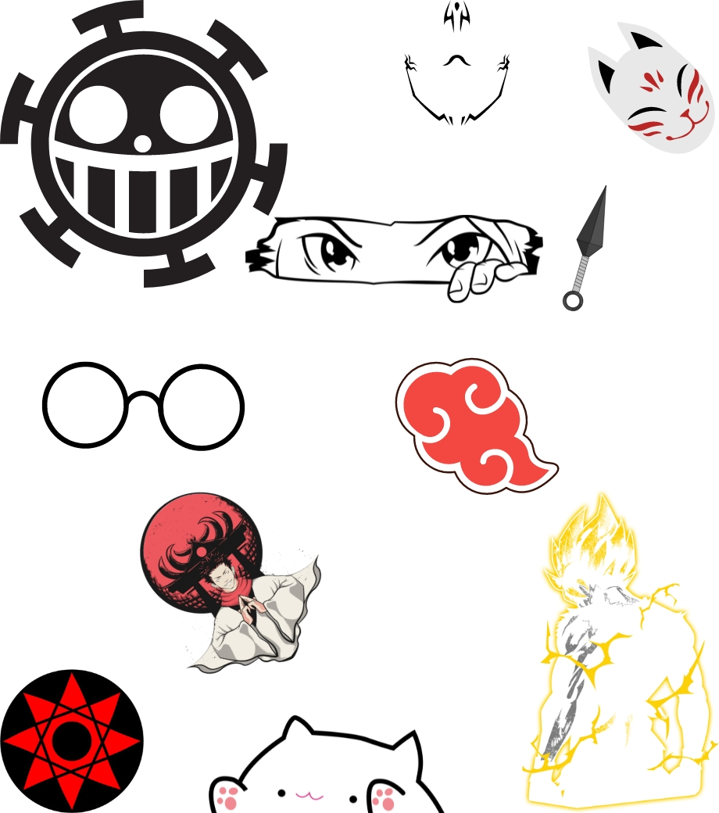

Aquarela.

Muitas cores, nenhum contorno, pinceladas precisas: conheça o estilo aquarela de tatuagens! A tatuagem no estilo aquarela é vem sendo uma tendência que tem tomado as redes sociais. Esse estilo é marcado pelo pouco ou nenhum uso de contorno, além de se abster de tinta preta. A ideia é criar uma verdadeira obra de arte, simulando pinceladas de tinta.
Quais os principais desenhos da tatuagem aquarela ?
- Animais
- Leão
Por simbolizar o poder, o leão é um dos animais mais pedidos na hora de fazer uma tatuagem. Na tattoo aquarela, o desenho ganha destaque. - Lobo
De um lado o lobo representa o bem por conta de sua astúcia e do outro temos a sua crueldade e luxúria como características do mal. - Borboleta
O desenho da borboleta é um dos mais procurados pelas mulheres, principalmente, por conta do significado de transformação. - Coruja
A coruja é muito procurada por pessoas que desejam demonstrar sabedoria, inteligência e mistério em suas tattoos. - Gato
Para quem deseja mostrar uma alma independente e ao mesmo sensual, já pode escolher a imagem do gato na sua tatuagem aquarela. - Cachorro
Que tal colocar a carinha do seu fiel amigo na sua tatuagem aquarela? A lealdade é o que muitos querem ao tatuar o cachorro.
- Flores
- Rosa Girassol
Pela cor viva do girassol, está muito relacionado com o Sol. Mas a flor simboliza adoração, felicidade e instabilidade. - Flor de Lótus
Se você quer uma tatuagem aquarela que simboliza perfeição, sabedoria e pureza, a flor de lótus é a mais indicada. Pode ser usada tanto por homens quanto mulheres.
- Símbolos
- Rosa dos Ventos
Para quem deseja ter mais luz e sorte, pode escolher uma tatuagem aquarela com o desenho de rosa dos ventos. A imagem é muito usada por pessoas que precisam de uma direção. - Âncora
Se a sua intenção é demonstrar firmeza, tranquilidade e fidelidade, pode apostar na imagem da âncora para a sua tattoo. - Pena
No caso da pena, ela está relacionada com a fecundidade, justiça, poder e pensamento. O desenho é muito usado tanto por homens quanto mulheres.